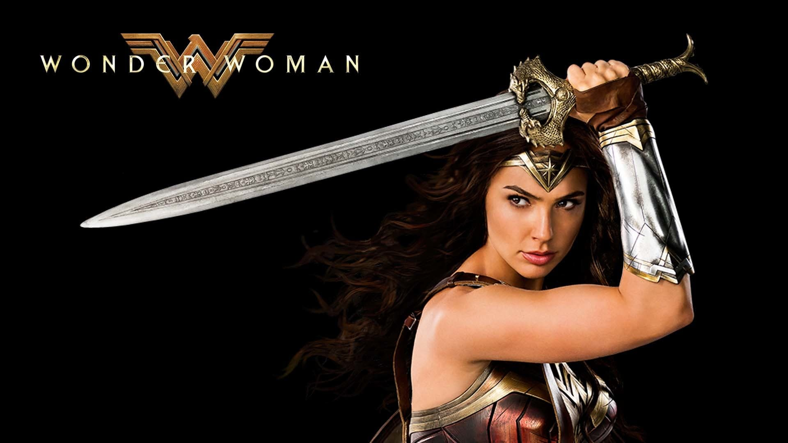
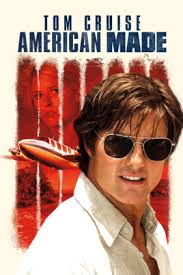
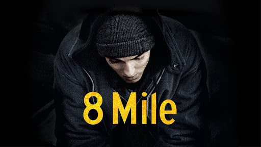
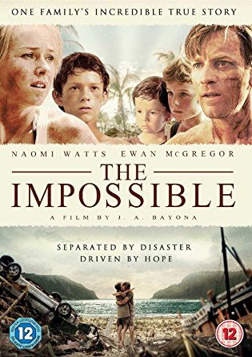

Home
|  |
Genre: Action & Adventure, Drama, Science Fiction & Fantasy
Publication date: 13.12.2016
Wonder Woman is a fictional superhero appearing in American comic books published by DC Comics.The character is a founding member of the Justice League, and an ambassador of the Amazon people. The character first appeared in All Star Comics in October 1941 with her first feature in Sensation Comics, January 1942. The Wonder Woman title has been published by DC Comics almost continuously except for a brief hiatus in 1986. In her homeland, the island nation of Themyscira, her official title is Princess Diana of Themyscira, Daughter of Hippolyta. When blending into the society outside of her homeland, she adopts her civilian identity Diana Prince
|
|  |
Genre: Action & Adventure, Drama, Mystery & Suspense
Publication date: 01.02.2018
American Made is a 2017 American biographical crime comedy film directed by Doug Liman, written by Gary Spinelli, and starring Tom Cruise, Domhnall Gleeson, Sarah Wright, Alejandro Edda, Mauricio Mejía, Caleb Landry Jones, and Jesse Plemons. The plot focuses on Barry Seal, a former TWA pilot who flew missions for the CIA, and became a drug smuggler for the Medellín Cartel in the 1980s. In order to avoid jail time, Seal became an informant for the DEA
|
|  |
Genre: Drama film
Publication date: 06.11.2002
8 Mile is a 2002 American Hip hop based drama film written by Scott Silver, directed by Curtis Hanson, and starring Eminem, Mekhi Phifer, Brittany Murphy, Michael Shannon, and Kim Basinger. The film is based loosely on Eminem's actual upbringing, and follows white rapper B-Rabbit (Eminem) and his attempt to launch a career in a genre dominated by African-Americans. The title is derived from 8 Mile Road, the highway between the predominantly black city of Detroit and Wayne County and the predominantly white Oakland County and Macomb County suburbs. It was filmed mostly on location
|
|  |
Genre: Disaster drama film
Publication date: 21.12.2012
The Impossible is a 2012 disaster drama film directed by J. A. Bayona and written by Sergio G. Sánchez. It is based on the experience of María Belón and her family in the 2004 Indian Ocean tsunami. The cast includes Naomi Watts, Ewan McGregor and Tom Holland. The film received positive reviews from critics for its direction and its acting, especially for Watts who was nominated for the Academy Award for Best Actress, the Golden Globe Award for Best Actress – Motion Picture Drama, and a Screen Actors Guild Award for Outstanding Performance by a Female Actor in a Leading Role.
|